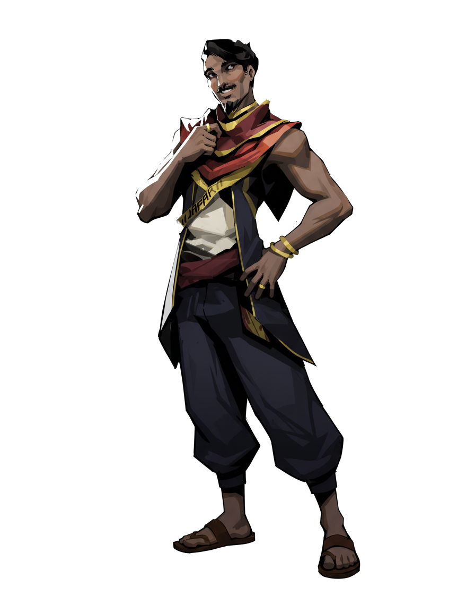

<title>Jafar of Neo-Baghdad</title>
<meta name="claude:viewport-fit-sides" content="cover">
<link rel="stylesheet" href="https://fonts.googleapis.com/css2?family=Big+Shoulders+Display:wght@700;900&family=Reem+Kufi:wght@500;700&family=IBM+Plex+Sans:wght@400;500;600&family=IBM+Plex+Mono:wght@500&display=swap">
<style>
/* Layout: full-bleed champion splash, then tabbed dossier (Lore / Kit / City / Sheet) over a night-city ground */
:root{
  --night:#0b0820; --ink:#140f2e; --panel:#1b1540; --line:#3a2f6e;
  --text:#f1ecff; --muted:#a99fcf;
  --arcane:#e04cf0; --gold:#e8b94a; --crimson:#b2203f; --teal:#3fd6d0;
  --display:"Big Shoulders Display",Impact,sans-serif;
  --kufi:"Reem Kufi","Big Shoulders Display",sans-serif;
  --body:"IBM Plex Sans",system-ui,sans-serif;
  --mono:"IBM Plex Mono",ui-monospace,monospace;
  color-scheme:dark;
}
*{box-sizing:border-box}
body{background:var(--night);color:var(--text);font-family:var(--body);font-size:16px;line-height:1.6;overflow-x:hidden}
.wrap{max-width:1180px;margin:0 auto;padding-left:max(16px,env(safe-area-inset-left,0px));padding-right:max(16px,env(safe-area-inset-right,0px))}

/* sigil canvas behind everything */
#sigils{position:fixed;inset:0;width:100%;height:100%;z-index:0;pointer-events:none;opacity:.55}
main,header,footer{position:relative;z-index:1}

/* HERO */
.hero{position:relative;min-height:min(92vh,860px);display:grid;align-items:end;overflow:hidden;border-bottom:1px solid var(--line)}
.hero-bg{position:absolute;inset:0;background:url(splash.jpg) center 20%/cover no-repeat;filter:saturate(1.1);transform:scale(1.06);animation:drift 18s ease-in-out infinite alternate}
.hero::after{content:"";position:absolute;inset:0;background:linear-gradient(180deg,rgba(11,8,32,.1) 0%,rgba(11,8,32,.2) 45%,var(--night) 100%),linear-gradient(90deg,rgba(11,8,32,.85) 0%,rgba(11,8,32,0) 55%)}
@keyframes drift{to{transform:scale(1.12) translateX(-1.5%)}}
.hero-copy{position:relative;z-index:2;padding-block:48px 56px;display:grid;gap:14px;max-width:640px}
.eyebrow{font-family:var(--mono);font-size:12px;letter-spacing:.24em;text-transform:uppercase;color:var(--gold)}
.hero h1{font-family:var(--display);font-weight:900;font-size:clamp(72px,16vw,180px);line-height:.82;margin:0;letter-spacing:.01em;text-shadow:0 0 40px rgba(224,76,240,.55)}
.arabic{font-family:var(--kufi);font-size:clamp(22px,4vw,34px);color:var(--arcane);direction:rtl;text-align:left;margin:0}
.title-line{font-family:var(--display);font-weight:700;font-size:clamp(20px,3vw,28px);text-transform:uppercase;letter-spacing:.08em;margin:0}
.tags{display:flex;flex-wrap:wrap;gap:8px}
.tag{font-family:var(--mono);font-size:12px;letter-spacing:.1em;text-transform:uppercase;padding:5px 10px;border:1px solid var(--line);background:rgba(20,15,46,.7)}
.tag b{color:var(--gold);font-weight:500}
.quote{font-size:18px;font-style:italic;color:var(--muted);margin:4px 0 0;max-width:46ch}
.cta-row{display:flex;flex-wrap:wrap;gap:12px;margin-top:8px}
.btn{font-family:var(--display);font-weight:700;font-size:18px;letter-spacing:.12em;text-transform:uppercase;color:var(--night);background:var(--gold);border:0;padding:12px 22px;cursor:pointer;clip-path:polygon(10px 0,100% 0,calc(100% - 10px) 100%,0 100%)}
.btn.ghost{background:transparent;color:var(--text);outline:1px solid var(--arcane);outline-offset:-1px}
.btn:focus-visible,.tab:focus-visible,.ab:focus-visible{outline:2px solid var(--teal);outline-offset:3px}

/* sound toggle */
.sound{position:fixed;right:calc(16px + env(safe-area-inset-right,0px));bottom:calc(16px + env(safe-area-inset-bottom,0px));z-index:20;font-family:var(--mono);font-size:12px;letter-spacing:.14em;text-transform:uppercase;background:var(--panel);color:var(--text);border:1px solid var(--arcane);padding:10px 14px;cursor:pointer;display:flex;gap:8px;align-items:center}
.bars{display:flex;gap:2px;align-items:end;height:12px}
.bars i{width:3px;background:var(--arcane);height:3px;transition:height .2s}
.sound.on .bars i{animation:eq .8s ease-in-out infinite alternate}
.sound.on .bars i:nth-child(2){animation-delay:.2s}.sound.on .bars i:nth-child(3){animation-delay:.4s}
@keyframes eq{to{height:12px}}

/* TABS */
nav.tabs{position:sticky;top:env(safe-area-inset-top,0px);z-index:10;background:rgba(11,8,32,.92);backdrop-filter:blur(8px);border-bottom:1px solid var(--line)}
body::before{content:"";position:fixed;inset:0 0 auto;height:env(safe-area-inset-top,0px);z-index:11;background:var(--night)}
.tabs .wrap{display:flex;gap:4px;overflow-x:auto}
.tab{font-family:var(--display);font-weight:700;font-size:20px;letter-spacing:.1em;text-transform:uppercase;color:var(--muted);background:none;border:0;padding:16px 18px;cursor:pointer;border-bottom:3px solid transparent;white-space:nowrap}
.tab[aria-selected="true"]{color:var(--text);border-color:var(--arcane)}
section.panel{padding-block:56px 80px}
h2{font-family:var(--display);font-weight:900;font-size:clamp(40px,7vw,72px);line-height:.95;text-transform:uppercase;margin:0 0 8px;text-wrap:balance}
h3{font-family:var(--display);font-weight:700;font-size:26px;letter-spacing:.06em;text-transform:uppercase;margin:0;color:var(--gold)}
p{margin:0}
.lede{color:var(--muted);max-width:62ch;font-size:18px}

/* LORE */
.lore{display:grid;grid-template-columns:minmax(0,1fr) minmax(0,380px);gap:48px;align-items:start}
.lore-text{display:grid;gap:28px;min-width:0}
.timeline{display:grid;gap:0;border-left:1px solid var(--line);margin-left:6px}
.era{position:relative;padding:0 0 22px 24px}
.era::before{content:"";position:absolute;left:-6px;top:6px;width:11px;height:11px;transform:rotate(45deg);background:var(--night);border:1px solid var(--arcane)}
.era .age{font-family:var(--mono);font-size:12px;color:var(--arcane);letter-spacing:.14em;text-transform:uppercase}
.era p{max-width:58ch}
.portrait{position:relative;display:grid;justify-items:center}
.portrait img{position:relative;z-index:1;max-height:640px;width:auto;filter:drop-shadow(0 0 30px rgba(224,76,240,.35))}
.portrait::before{content:"";position:absolute;width:86%;aspect-ratio:1;max-width:100%;top:12%;border-radius:50%;background:radial-gradient(circle,rgba(224,76,240,.35),transparent 65%)}
.traits{display:grid;grid-template-columns:repeat(2,minmax(0,1fr));gap:1px;background:var(--line);border:1px solid var(--line)}
.traits div{background:var(--ink);padding:14px 16px;display:grid;gap:4px}
.traits span{font-family:var(--mono);font-size:11px;letter-spacing:.16em;text-transform:uppercase;color:var(--muted)}

/* KIT (abilities) */
.kit{display:grid;grid-template-columns:minmax(0,340px) minmax(0,1fr);gap:40px;margin-top:32px}
.abil-list{display:grid;gap:8px}
.ab{display:grid;grid-template-columns:56px 1fr;gap:14px;align-items:center;text-align:left;background:var(--ink);border:1px solid var(--line);color:var(--text);padding:10px;cursor:pointer;font:inherit}
.ab[aria-pressed="true"]{border-color:var(--arcane);background:var(--panel);box-shadow:inset 3px 0 0 var(--arcane)}
.ab .key{width:56px;height:56px;display:grid;place-items:center;font-family:var(--display);font-weight:900;font-size:26px;color:var(--night);background:var(--gold);clip-path:polygon(25% 0,75% 0,100% 50%,75% 100%,25% 100%,0 50%)}
.ab[data-k="P"] .key{background:var(--arcane)}
.ab .nm{font-family:var(--display);font-weight:700;font-size:20px;letter-spacing:.06em;text-transform:uppercase;line-height:1.1}
.ab .ty{font-family:var(--mono);font-size:11px;color:var(--muted);letter-spacing:.12em;text-transform:uppercase}
.abil-detail{border:1px solid var(--line);background:linear-gradient(160deg,var(--panel),var(--ink));padding:28px;display:grid;gap:18px;min-width:0}
.abil-detail canvas{width:100%;height:220px;display:block;background:var(--night);border:1px solid var(--line)}
.abil-detail .meta{display:flex;flex-wrap:wrap;gap:8px}
.abil-detail h4{font-family:var(--display);font-weight:900;font-size:40px;text-transform:uppercase;margin:0;line-height:1}

/* CITY */
.factions{display:grid;grid-template-columns:repeat(auto-fit,minmax(240px,1fr));gap:16px;margin-top:28px}
.card{border:1px solid var(--line);background:var(--ink);padding:20px;display:grid;gap:8px;align-content:start}
.card .k{font-family:var(--mono);font-size:11px;letter-spacing:.16em;text-transform:uppercase;color:var(--teal)}
.card h3{font-size:22px}
.tiers{display:grid;grid-template-columns:repeat(5,minmax(0,1fr));gap:4px;margin-top:20px}
.tier{background:var(--ink);border-top:3px solid var(--arcane);padding:14px 12px;display:grid;gap:4px}
.tier:nth-child(1){border-color:#5a4a96}.tier:nth-child(2){border-color:#8a5fd0}.tier:nth-child(3){border-color:var(--arcane)}.tier:nth-child(4){border-color:var(--gold)}.tier:nth-child(5){border-color:var(--crimson)}
.tier b{font-family:var(--display);font-size:22px;text-transform:uppercase;letter-spacing:.05em}
.tier small{color:var(--muted);font-size:13px;line-height:1.4}
.split{display:grid;grid-template-columns:minmax(0,1fr) minmax(0,1fr);gap:40px;margin-top:48px}
.paths{display:grid;gap:10px}
.path{display:grid;grid-template-columns:140px 1fr;gap:16px;padding:12px 0;border-bottom:1px solid var(--line)}
.path b{font-family:var(--display);font-size:20px;text-transform:uppercase;color:var(--gold)}
.path i{display:block;font-family:var(--kufi);font-style:normal;color:var(--muted);font-size:14px}

/* SHEET */
.sheet-head{display:flex;flex-wrap:wrap;gap:12px 32px;align-items:end;justify-content:space-between;border-bottom:1px solid var(--line);padding-bottom:20px}
.sheet-grid{display:grid;grid-template-columns:minmax(0,1.1fr) minmax(0,1fr) minmax(0,1fr);gap:24px;margin-top:24px}
.stats{display:grid;grid-template-columns:repeat(3,minmax(0,1fr));gap:8px}
.stat{background:var(--ink);border:1px solid var(--line);text-align:center;padding:12px 6px;display:grid;gap:2px}
.stat span{font-family:var(--mono);font-size:11px;letter-spacing:.18em;color:var(--muted)}
.stat b{font-family:var(--display);font-size:38px;line-height:1;font-variant-numeric:tabular-nums}
.stat em{font-style:normal;font-family:var(--mono);color:var(--gold)}
.vitals{display:grid;grid-template-columns:repeat(3,minmax(0,1fr));gap:8px;margin-top:8px}
.vital{border:1px solid var(--arcane);padding:10px;text-align:center}
.vital b{display:block;font-family:var(--display);font-size:30px;font-variant-numeric:tabular-nums}
.vital span{font-family:var(--mono);font-size:10px;letter-spacing:.16em;text-transform:uppercase;color:var(--muted)}
.block{background:var(--ink);border:1px solid var(--line);padding:18px;display:grid;gap:10px;align-content:start}
.block h3{font-size:18px}
.rows{display:grid;gap:4px;font-variant-numeric:tabular-nums}
.rows div{display:flex;justify-content:space-between;gap:12px;border-bottom:1px dashed var(--line);padding:3px 0;font-size:15px}
.rows div b{font-family:var(--mono);font-weight:500;color:var(--gold)}
ul.plain{margin:0;padding-left:18px;display:grid;gap:6px;font-size:15px}
ul.plain b{color:var(--text)}
.note{font-size:13px;color:var(--muted)}
footer{border-top:1px solid var(--line);padding-block:28px;color:var(--muted);font-size:13px}

@media (max-width:900px){
  .lore,.kit,.split,.sheet-grid{grid-template-columns:minmax(0,1fr)}
  .portrait img{max-height:460px}
  .tiers{grid-template-columns:repeat(2,minmax(0,1fr))}
  .path{grid-template-columns:1fr;gap:2px}
}
@media (prefers-reduced-motion:reduce){*,*::before,*::after{animation:none!important;transition:none!important}}
</style>

<canvas id="sigils" aria-hidden="true"></canvas>

<header class="hero">
  <div class="hero-bg" role="img" aria-label="Jafar pointing at the viewer in front of his glowing name"></div>
  <div class="wrap" style="width:100%">
    <div class="hero-copy">
      <span class="eyebrow">Neo-Baghdad · Lower Wards · Councillor</span>
      <h1>Jafar</h1>
      <p class="arabic">جعفر ابن الريح</p>
      <p class="title-line">The Storm-Forged Merchant</p>
      <div class="tags">
        <span class="tag"><b>Role</b> Artificer</span>
        <span class="tag"><b>Path</b> Fused</span>
        <span class="tag"><b>Tier</b> Master</span>
        <span class="tag"><b>Element</b> Wind · Lightning</span>
      </div>
      <p class="quote">"Everyone in this city is selling something. I just read the price first."</p>
      <div class="cta-row">
        <button class="btn" id="playBtn" type="button">Hear the city</button>
        <button class="btn ghost" type="button" data-goto="kit">See his kit</button>
      </div>
    </div>
  </div>
</header>

<nav class="tabs" aria-label="Sections">
  <div class="wrap" role="tablist">
    <button class="tab" role="tab" id="t-lore" aria-controls="lore" aria-selected="true">Lore</button>
    <button class="tab" role="tab" id="t-kit" aria-controls="kit" aria-selected="false">Abilities</button>
    <button class="tab" role="tab" id="t-city" aria-controls="city" aria-selected="false">The City</button>
    <button class="tab" role="tab" id="t-sheet" aria-controls="sheet" aria-selected="false">Character Sheet</button>
  </div>
</nav>

<main>
<!-- LORE -->
<section class="panel" id="lore" role="tabpanel" aria-labelledby="t-lore">
  <div class="wrap lore">
    <div class="lore-text">
      <div>
        <span class="eyebrow">Biography</span>
        <h2>Son of the wind</h2>
        <p class="lede">An orphan from the salt-flat slums who built a merchant empire out of scrap, then built himself the tools to defend it. Now he sits on the Diwan, holding a file that could burn the city's biggest company to the ground.</p>
      </div>
      <div class="timeline">
        <div class="era"><span class="age">Age 7 · The Rupture</span><p>His parents, salvage workers in Sabkha, die when a Qarun Dynamics Aether pipeline bursts. The company's report lists the boy as "debris." He keeps a copy.</p></div>
        <div class="era"><span class="age">Age 7–15 · The Scrapyards</span><p>Fixes broken tech for food. Teaches himself to read on stolen library slates, including torn pages of a forbidden alchemical codex on sigil geometry.</p></div>
        <div class="era"><span class="age">Age 15–21 · The Souk</span><p>Turns a repair stall into a trading network between alchemists and tech dealers who refuse to deal with each other. Middlemen get robbed, so he builds his first gauntlet from a junked arc-welder.</p></div>
        <div class="era"><span class="age">Age 21–27 · The Ascent</span><p>Funds water filters, clinics and schools in Sabkha. The Lower Wards elect him to the Diwan, the first slum orphan to hold a seat.</p></div>
        <div class="era"><span class="age">Age 29 · Now</span><p>He has proof Qarun knew the pipeline would fail. Expose it and crash the city's fuel supply, or use it as leverage. He hasn't decided which man he is.</p></div>
      </div>
      <div class="traits">
        <div><span>Ideal</span>Knowledge is the only inheritance no one can take.</div>
        <div><span>Bond</span>The people of Sabkha.</div>
        <div><span>Flaw</span>Thinks he's the only one smart enough to fix it.</div>
        <div><span>Fear</span>Becoming a man who'd call a child "debris."</div>
      </div>
    </div>
    <div class="portrait"></div>
  </div>
</section>

<!-- KIT -->
<section class="panel" id="kit" role="tabpanel" aria-labelledby="t-kit" hidden>
  <div class="wrap">
    <span class="eyebrow">Artificer kit</span>
    <h2>Built, not born</h2>
    <p class="lede">Every power Jafar has, he made. Sigil geometry etched into scavenged tech, no implants. Select an ability to see it fire.</p>
    <div class="kit">
      <div class="abil-list" id="abilList"></div>
      <div class="abil-detail">
        <canvas id="fx" width="800" height="300" aria-hidden="true"></canvas>
        <div class="meta" id="abMeta"></div>
        <h4 id="abName"></h4>
        <p id="abDesc"></p>
        <p class="note" id="abLore"></p>
      </div>
    </div>
  </div>
</section>

<!-- CITY -->
<section class="panel" id="city" role="tabpanel" aria-labelledby="t-city" hidden>
  <div class="wrap">
    <span class="eyebrow">Year 2187 · Population 40 million</span>
    <h2>Neo-Baghdad</h2>
    <p class="lede">The Round City rebuilt on the Tigris. Minarets double as data spires, gold domes house server farms, and holo-calligraphy runs down the towers in the rain. A century ago the Unsealing proved the old alchemists right: the elements answer to the right geometry. The city has been dividing over who gets to learn it ever since.</p>

    <div class="split">
      <div>
        <h3>Paths to power</h3>
        <div class="paths">
          <div class="path"><b>The Learned<i>أهل العلم</i></b><p>Alchemists, chemists and elemental benders. Power through study and sigil-circles.</p></div>
          <div class="path"><b>The Wired<i>أهل الآلة</i></b><p>Hard-light tools, exo-gear, drones. No implants; the body stays untouched. Power through money.</p></div>
          <div class="path"><b>The Fused<i>الممتزج</i></b><p>Sigil-etched tech. Rare, costly, unstable. Jafar is one, and hides how far it goes.</p></div>
          <div class="path"><b>The Unmarked<i>بلا علامة</i></b><p>No powers, little tech. The majority, and the vote every faction needs.</p></div>
        </div>
      </div>
      <div>
        <h3>Power tiers</h3>
        <div class="tiers">
          <div class="tier"><b>Spark</b><small>A parlor trick, a toy rig</small></div>
          <div class="tier"><b>Adept</b><small>Licensed; useful in a fight</small></div>
          <div class="tier"><b>Master</b><small>Shifts a street's weather</small></div>
          <div class="tier"><b>Sage</b><small>Reshapes a district. Under 50 alive</small></div>
          <div class="tier"><b>Legend</b><small>Myth; rumored in Diwan vaults</small></div>
        </div>
      </div>
    </div>

    <h3 style="margin-top:48px">Districts</h3>
    <div class="factions">
      <div class="card"><span class="k">Center</span><h3>The Round City</h3><p>Gold domes, the Diwan, the Grand Library. Where the elite live.</p></div>
      <div class="card"><span class="k">Corporate</span><h3>Al-Karkh Spires</h3><p>Megacorp towers of the Wired. Qarun Dynamics' headquarters.</p></div>
      <div class="card"><span class="k">Jafar's turf</span><h3>The Souk Infinite</h3><p>A fifteen-level vertical bazaar. Anything can be bought.</p></div>
      <div class="card"><span class="k">Birthplace</span><h3>Sabkha</h3><p>Salt-flat slums on reclaimed riverbed, downwind of the refineries.</p></div>
      <div class="card"><span class="k">Academy</span><h3>Bayt al-Hikma</h3><p>Floating libraries and the alchemy guildhalls of the Learned.</p></div>
      <div class="card"><span class="k">Underworld</span><h3>The Drowned Mosque</h3><p>A sunken ruin in the canals. Sacred, haunted, black-market hub.</p></div>
    </div>

    <h3 style="margin-top:48px">Factions</h3>
    <div class="factions">
      <div class="card"><span class="k">Government</span><h3>The Diwan</h3><p>City council. Trade law and the licensing of magic.</p></div>
      <div class="card"><span class="k">Antagonist</span><h3>Qarun Dynamics</h3><p>Refines Aether, the fuel that runs the city. CEO Malik Qarun.</p></div>
      <div class="card"><span class="k">Old guard</span><h3>Circle of Brass</h3><p>Alchemist guild that believes knowledge should be rationed.</p></div>
      <div class="card"><span class="k">Resistance</span><h3>The Sandglass</h3><p>Benders and Unmarked fighting for shared power.</p></div>
      <div class="card"><span class="k">Enforcers</span><h3>Muhtasib Corps</h3><p>City police armed with tech and sanctioned benders.</p></div>
    </div>
  </div>
</section>

<!-- SHEET -->
<section class="panel" id="sheet" role="tabpanel" aria-labelledby="t-sheet" hidden>
  <div class="wrap">
    <div class="sheet-head">
      <div>
        <span class="eyebrow">Dungeons &amp; Dragons 5e</span>
        <h2>Jafar ibn al-Rih</h2>
        <p class="lede">Human (Variant) · Artificer 5 (Armorer, Guardian-style) · Background: Guild Merchant · Lawful Neutral</p>
      </div>
    </div>
    <div class="sheet-grid">
      <div class="block">
        <h3>Ability scores</h3>
        <div class="stats">
          <div class="stat"><span>STR</span><b>10</b><em>+0</em></div>
          <div class="stat"><span>DEX</span><b>14</b><em>+2</em></div>
          <div class="stat"><span>CON</span><b>14</b><em>+2</em></div>
          <div class="stat"><span>INT</span><b>18</b><em>+4</em></div>
          <div class="stat"><span>WIS</span><b>10</b><em>+0</em></div>
          <div class="stat"><span>CHA</span><b>14</b><em>+2</em></div>
        </div>
        <div class="vitals">
          <div class="vital"><b>19</b><span>AC (armor)</span></div>
          <div class="vital"><b>38</b><span>HP</span></div>
          <div class="vital"><b>30</b><span>Speed ft</span></div>
        </div>
        <div class="rows">
          <div>Proficiency <b>+3</b></div>
          <div>Initiative <b>+2</b></div>
          <div>Spell save DC <b>15</b></div>
          <div>Spell attack <b>+7</b></div>
          <div>Saves: CON / INT <b>+5 / +7</b></div>
        </div>
        <p class="note">Point-buy, ASI at 4 into INT. HP is an estimate (average rolls).</p>
      </div>
      <div class="block">
        <h3>Skills &amp; tools</h3>
        <div class="rows">
          <div>Arcana <b>+7</b></div>
          <div>Investigation <b>+7</b></div>
          <div>Insight <b>+3</b></div>
          <div>Persuasion <b>+5</b></div>
          <div>Deception <b>+5</b></div>
          <div>Sleight of Hand <b>+5</b></div>
        </div>
        <p class="note">Tools: tinker's, smith's, alchemist's supplies, thieves' tools. Languages: Common, Old Tongue, Thieves' Cant.</p>
        <h3>Features</h3>
        <ul class="plain">
          <li><b>Magical Tinkering</b> — street-stall gadgets</li>
          <li><b>Infuse Item</b> (4 known, 2 active)</li>
          <li><b>Arcane Armor</b> — the storm rig</li>
          <li><b>Armor Model: Guardian</b> → Thunder Gauntlets, Defensive Field</li>
          <li><b>Extra Attack</b> (level 5)</li>
          <li><b>The Right Tool</b>, Flash of Genius at 7</li>
        </ul>
      </div>
      <div class="block">
        <h3>Infusions</h3>
        <ul class="plain">
          <li><b>Boots of the Winding Path</b> → the hover board</li>
          <li><b>Enhanced Weapon</b> → storm gauntlet</li>
          <li><b>Enhanced Defense</b> → sigil weave</li>
          <li><b>Repeating Shot</b> (swap-in)</li>
        </ul>
        <h3>Spells</h3>
        <ul class="plain">
          <li><b>Cantrips:</b> Shocking Grasp, Gust, Mending</li>
          <li><b>1st:</b> Thunderwave, Shield, Absorb Elements, Feather Fall</li>
          <li><b>2nd:</b> Mirror Image, Shatter, Levitate</li>
        </ul>
        <h3>Gear</h3>
        <ul class="plain">
          <li>Storm Gauntlet (1d8 thunder, reach melee)</li>
          <li>Simoom hover board</li>
          <li>Gold sigil rings (focus) · holo-ledger</li>
          <li>Merchant's seal of the Lower Wards · 150 gp</li>
        </ul>
      </div>
    </div>
  </div>
</section>
</main>

<footer><div class="wrap">Jafar of Neo-Baghdad · original character and art by Nabil Pervez · sound is generated live in your browser.</div></footer>

<button class="sound" id="soundBtn" type="button" aria-pressed="false"><span class="bars"><i></i><i></i><i></i></span><span id="soundLbl">Sound off</span></button>

<script>
/* ---------- Tabs ---------- */
const tabs=[...document.querySelectorAll('.tab')];
function show(id,scroll){
  tabs.forEach(t=>{const on=t.getAttribute('aria-controls')===id;t.setAttribute('aria-selected',on);document.getElementById(t.getAttribute('aria-controls')).hidden=!on});
  if(scroll)document.querySelector('nav.tabs').scrollIntoView({behavior:'smooth'});
  sfx('tab');
}
tabs.forEach(t=>t.addEventListener('click',()=>show(t.getAttribute('aria-controls'))));
document.querySelector('[data-goto]').addEventListener('click',()=>show('kit',true));
const h=location.hash.slice(1);if(['lore','kit','city','sheet'].includes(h))show(h);

/* ---------- Abilities ---------- */
const AB=[
 {k:'P',name:'Ledger of Debts',type:'Passive',cd:'—',desc:'Jafar remembers every favor. Each time an enemy damages an ally, he marks them. His next hit on a marked target releases the debt as bonus lightning.',lore:'"I never forget a debt. Not even the ones I owe."',fx:'sigil'},
 {k:'Q',name:'Storm Gauntlet',type:'Skillshot',cd:'6s',desc:'Fires a charged bolt of sigil-lightning from his right gauntlet in a straight line. Hits refund part of the cooldown and mark the target.',lore:'Built from a junked arc-welder when he was sixteen. Rebuilt eleven times since.',fx:'bolt'},
 {k:'W',name:'Circle of Ilm',type:'Shield',cd:'14s',desc:'Throws a spinning geometric sigil in front of him that blocks projectiles and absorbs damage, then bursts outward as a wind pulse.',lore:'The first circle he learned from the torn codex. Twelve points, one for each lesson.',fx:'circle'},
 {k:'E',name:'Simoom Glide',type:'Dash',cd:'10s',desc:'Kicks his hover board into a short burst, leaving a trail of hot sand that slows anyone who follows.',lore:'Named for the desert wind. He rides it to Diwan sessions and is always on time.',fx:'dash'},
 {k:'R',name:'Wrath of the Wind',type:'Ultimate',cd:'90s',desc:'Rises on the board and calls a sandstorm laced with lightning around a target zone. Enemies inside are blinded and struck repeatedly. Marked targets take double.',lore:'The night the Lower Wards elected him, the sky over Sabkha lit up violet. Nobody saw who did it.',fx:'storm'}
];
const list=document.getElementById('abilList');
AB.forEach((a,i)=>{const b=document.createElement('button');b.className='ab';b.type='button';b.dataset.k=a.k;b.setAttribute('aria-pressed',i===1);b.innerHTML=`<span class="key">${a.k}</span><span><span class="nm">${a.name}</span><br><span class="ty">${a.type} · CD ${a.cd}</span></span>`;b.onclick=()=>pick(i,true);list.appendChild(b)});
let cur=1;
function pick(i,sound){cur=i;const a=AB[i];[...list.children].forEach((b,j)=>b.setAttribute('aria-pressed',j===i));
 document.getElementById('abName').textContent=a.name;document.getElementById('abDesc').textContent=a.desc;document.getElementById('abLore').textContent=a.lore;
 document.getElementById('abMeta').innerHTML=`<span class="tag"><b>Key</b> ${a.k}</span><span class="tag"><b>Type</b> ${a.type}</span><span class="tag"><b>Cooldown</b> ${a.cd}</span>`;
 t0=performance.now();if(sound)sfx(a.fx);}
pick(1,false);

/* ---------- FX canvas ---------- */
const fx=document.getElementById('fx'),fc=fx.getContext('2d');let t0=performance.now();
const reduce=matchMedia('(prefers-reduced-motion: reduce)').matches;
function ring(c,x,y,r,rot,n,col,lw){c.save();c.translate(x,y);c.rotate(rot);c.strokeStyle=col;c.lineWidth=lw;c.beginPath();c.arc(0,0,r,0,Math.PI*2);c.stroke();
 c.beginPath();for(let i=0;i<=n;i++){const a=i*Math.PI*2/n*(n%2?2:1);const p=[Math.cos(i*Math.PI*2/n)*r,Math.sin(i*Math.PI*2/n)*r];i?c.lineTo(...p):c.moveTo(...p)}c.stroke();
 for(let i=0;i<n;i++){const a=i*Math.PI*2/n;c.beginPath();c.arc(Math.cos(a)*r,Math.sin(a)*r,3,0,7);c.fillStyle=col;c.fill()}c.restore();}
function star(c,x,y,r,rot,col){c.save();c.translate(x,y);c.rotate(rot);c.strokeStyle=col;c.lineWidth=1.5;for(let k=0;k<2;k++){c.beginPath();for(let i=0;i<4;i++){const a=k*Math.PI/4+i*Math.PI/2;const p=[Math.cos(a)*r,Math.sin(a)*r];i?c.lineTo(...p):c.moveTo(...p)}c.closePath();c.stroke()}c.restore();}
function bolt(c,x1,y1,x2,y2,col,jit){c.strokeStyle=col;c.lineWidth=3;c.shadowColor=col;c.shadowBlur=18;c.beginPath();c.moveTo(x1,y1);const s=14;for(let i=1;i<s;i++){const t=i/s;c.lineTo(x1+(x2-x1)*t+(Math.random()-.5)*jit,y1+(y2-y1)*t+(Math.random()-.5)*jit)}c.lineTo(x2,y2);c.stroke();c.shadowBlur=0;}
function drawFx(now){const W=fx.width,H=fx.height,t=(now-t0)/1000;fc.fillStyle='rgba(11,8,32,.35)';fc.fillRect(0,0,W,H);
 const A='#e04cf0',G='#e8b94a',T='#3fd6d0';const ph=t%2.4;
 switch(AB[cur].fx){
  case 'sigil':ring(fc,W/2,H/2,90,t*.4,12,A,1.5);ring(fc,W/2,H/2,60,-t*.7,6,G,1.5);star(fc,W/2,H/2,40,t,T);break;
  case 'bolt':{ring(fc,110,H/2,34,t*2,8,G,1.5);const x=110+Math.min(ph/1.2,1)*(W-200);if(ph<1.4)bolt(fc,110,H/2,x,H/2,A,ph<1.2?28:10);if(ph>1.1&&ph<1.7){fc.beginPath();fc.arc(W-90,H/2,(ph-1.1)*120,0,7);fc.strokeStyle=T;fc.lineWidth=2;fc.stroke()}break}
  case 'circle':{const s=Math.min(ph/.5,1);ring(fc,W/2,H/2,100*s,t*1.5,12,A,2);ring(fc,W/2,H/2,70*s,-t*2,8,G,1.5);star(fc,W/2,H/2,45*s,t*3,T);if(ph>1.8){fc.beginPath();fc.arc(W/2,H/2,100+(ph-1.8)*300,0,7);fc.strokeStyle=T;fc.lineWidth=2;fc.stroke()}break}
  case 'dash':{const x=80+((ph/1.2)%1)*(W-160);fc.fillStyle=G;for(let i=0;i<14;i++){fc.globalAlpha=.6;fc.fillRect(x-20-i*16+Math.random()*6,H/2+28+Math.random()*16,4,4)}fc.globalAlpha=1;fc.save();fc.translate(x,H/2+20);fc.fillStyle=A;fc.shadowColor=A;fc.shadowBlur=20;fc.beginPath();fc.ellipse(0,0,46,7,0,0,7);fc.fill();fc.restore();fc.shadowBlur=0;ring(fc,x,H/2-20,22,t*4,6,T,1.2);break}
  case 'storm':{for(let i=0;i<40;i++){const a=t*1.6+i*.6,r=30+(i*7)%120;fc.fillStyle=i%3?G:'#8a5fd0';fc.globalAlpha=.7;fc.fillRect(W/2+Math.cos(a)*r*1.6,H/2+Math.sin(a)*r*.7,3,3)}fc.globalAlpha=1;ring(fc,W/2,H/2,120,t*.6,12,A,1.5);if(Math.random()<.18)bolt(fc,W/2+(Math.random()-.5)*300,0,W/2+(Math.random()-.5)*160,H/2+40,A,30);break}
 }}
/* ---------- Background sigils ---------- */
const bg=document.getElementById('sigils'),bc=bg.getContext('2d');
function sizeBg(){bg.width=innerWidth;bg.height=innerHeight}sizeBg();addEventListener('resize',sizeBg);
const nodes=Array.from({length:5},(_,i)=>({x:Math.random(),y:Math.random(),r:60+Math.random()*120,s:(Math.random()-.5)*.2,n:[6,8,12][i%3]}));
function drawBg(now){const t=now/1000;bc.clearRect(0,0,bg.width,bg.height);nodes.forEach((n,i)=>{const col=i%2?'rgba(224,76,240,.18)':'rgba(232,185,74,.12)';ring(bc,n.x*bg.width,n.y*bg.height,n.r,t*n.s,n.n,col,1);star(bc,n.x*bg.width,n.y*bg.height,n.r*.55,-t*n.s,col)})}
function loop(now){drawFx(now);drawBg(now);requestAnimationFrame(loop)}
if(reduce){drawFx(performance.now());drawBg(0)}else requestAnimationFrame(loop);

/* ---------- Sound (Web Audio, generated) ---------- */
let ctx=null,master=null,on=false,amb=[];
function initAudio(){if(ctx)return;ctx=new (window.AudioContext||window.webkitAudioContext)();master=ctx.createGain();master.gain.value=0;master.connect(ctx.destination);
 // drone: D + A + Eb (Hijaz color)
 [73.4,110,155.6].forEach((f,i)=>{const o=ctx.createOscillator(),g=ctx.createGain(),lp=ctx.createBiquadFilter();o.type=i?'triangle':'sawtooth';o.frequency.value=f;lp.type='lowpass';lp.frequency.value=600;g.gain.value=i?.05:.07;o.connect(lp).connect(g).connect(master);o.start();amb.push(o)});
 // rain/wind noise
 const len=ctx.sampleRate*2,buf=ctx.createBuffer(1,len,ctx.sampleRate),d=buf.getChannelData(0);for(let i=0;i<len;i++)d[i]=Math.random()*2-1;
 const n=ctx.createBufferSource();n.buffer=buf;n.loop=true;const bp=ctx.createBiquadFilter();bp.type='bandpass';bp.frequency.value=900;bp.Q.value=.6;const ng=ctx.createGain();ng.gain.value=.05;n.connect(bp).connect(ng).connect(master);n.start();
 const lfo=ctx.createOscillator(),lg=ctx.createGain();lfo.frequency.value=.08;lg.gain.value=500;lfo.connect(lg).connect(bp.frequency);lfo.start();
 // Hijaz melody plucks
 const scale=[293.7,311.1,370,392,440,466.2,523.3,587.3];
 setInterval(()=>{if(!on)return;if(Math.random()<.55){pluck(scale[Math.floor(Math.random()*scale.length)]*(Math.random()<.3?.5:1),.12)}},520);
}
function pluck(f,v){const o=ctx.createOscillator(),g=ctx.createGain(),t=ctx.currentTime;o.type='triangle';o.frequency.value=f;g.gain.setValueAtTime(v,t);g.gain.exponentialRampToValueAtTime(.001,t+1.4);o.connect(g).connect(master);o.start(t);o.stop(t+1.5)}
function sfx(type){if(!ctx||!on)return;const t=ctx.currentTime;
 if(type==='tab'){pluck(880,.06);return}
 if(type==='bolt'||type==='storm'){const len=ctx.sampleRate*.5,b=ctx.createBuffer(1,len,ctx.sampleRate),d=b.getChannelData(0);for(let i=0;i<len;i++)d[i]=(Math.random()*2-1)*Math.pow(1-i/len,2)*(Math.random()<.3?1:.3);const s=ctx.createBufferSource();s.buffer=b;const hp=ctx.createBiquadFilter();hp.type='highpass';hp.frequency.value=1200;const g=ctx.createGain();g.gain.value=type==='storm'?.5:.35;s.connect(hp).connect(g).connect(master);s.start();}
 const o=ctx.createOscillator(),g=ctx.createGain();o.type=type==='dash'?'sine':'sawtooth';
 const map={bolt:[1200,200],circle:[300,900],dash:[200,1400],storm:[80,40],sigil:[440,660]};const [a,b]=map[type]||[400,800];
 o.frequency.setValueAtTime(a,t);o.frequency.exponentialRampToValueAtTime(b,t+.4);g.gain.setValueAtTime(.12,t);g.gain.exponentialRampToValueAtTime(.001,t+(type==='storm'?1.6:.5));o.connect(g).connect(master);o.start(t);o.stop(t+1.7);}
const sBtn=document.getElementById('soundBtn'),lbl=document.getElementById('soundLbl'),pBtn=document.getElementById('playBtn');
function toggle(){initAudio();ctx.resume();on=!on;master.gain.cancelScheduledValues(ctx.currentTime);master.gain.linearRampToValueAtTime(on?.8:0,ctx.currentTime+.8);sBtn.classList.toggle('on',on);sBtn.setAttribute('aria-pressed',on);lbl.textContent=on?'Sound on':'Sound off';pBtn.textContent=on?'Mute the city':'Hear the city';if(on)sfx('circle')}
sBtn.onclick=toggle;pBtn.onclick=toggle;
</script>
